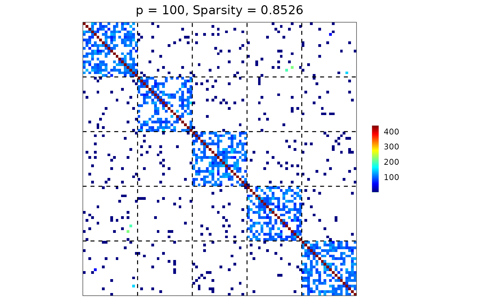

Visualize a matrix (e.g., a precision, covariance, or adjacency matrix) as a heatmap with optional group-based reordering and dashed boundary lines separating group blocks.
Usage
visualize(
mat,
membership,
reorder_by_group = FALSE,
colors = colorRampPalette(c("#00007F", "blue", "#007FFF", "cyan", "#7FFF7F", "yellow",
"#FF7F00", "red", "#7F0000"))(256)
)Arguments
- mat
A p-by-p matrix.
- membership
An integer vector specifying the group membership. The length of
membershipmust be consistent with the dimension p.- reorder_by_group
A boolean (default =
FALSE) specifying whether to reorder both rows and columns ofmataccording tomembership, such that variables from the same group are contiguous.- colors
A vector of colors specifying an n-color gradient scale for the fill aesthetics.
Value
A ggplot2 heatmap showing the matrix entries. Dashed lines indicate
group boundaries. The plot title also reports matrix dimension and sparsity.
Examples
## reproducibility for everything
set.seed(1234)
## user-defined sampler
my_gamma <- function(n) {
rgamma(n, shape = 20, scale = 5)
}
## block-structured precision matrix based on SBM
sim <- gen_prec_sbm(p = 100, K = 5,
within.prob = 0.5, between.prob = 0.05,
weight.dists = list(my_gamma, "unif"),
weight.paras = list(NULL, c(min = 0, max = 1)),
min.eig = 0.1)
## visualization
visualize(sim$Omega, sim$membership)
